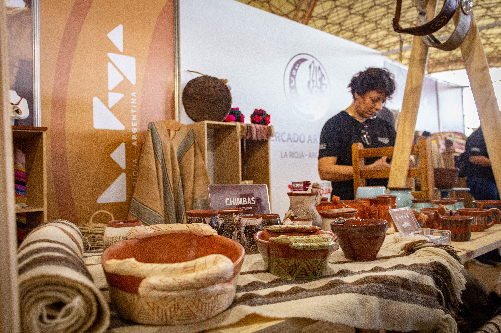

Emprendedores de productos artesanales buscan mostrar sus proyectos para poder hacer valer su trabajo e incluso atraer clientes con gustos e interés en lo artesanal , por eso nuestra propuesta es que usen nuestro sitio para poder cumplir con sus objetivos ya que nuestra idea es promover e incentivar a emprendedores artesanales que puedan montar su tienda digital ,así también a usuarios interesados a que puedan explorar y encontrar lo que buscan de acuerdo a sus intereses por los productos artesanales .